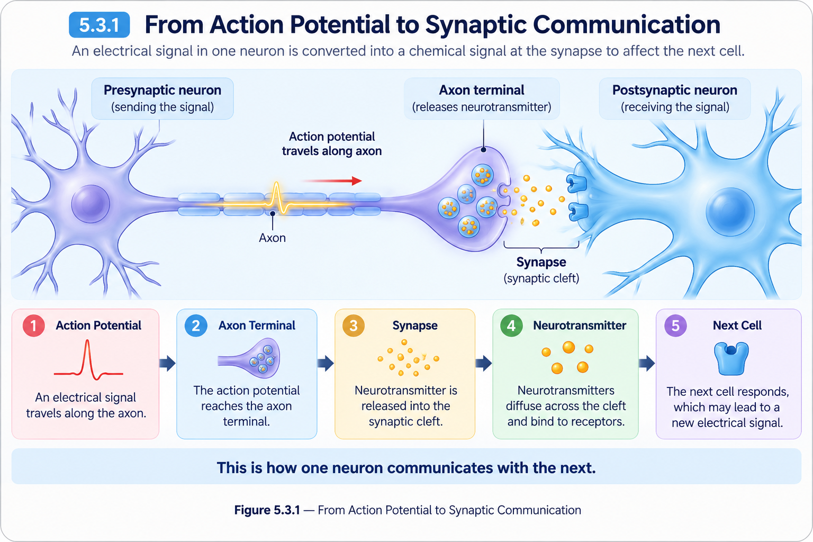
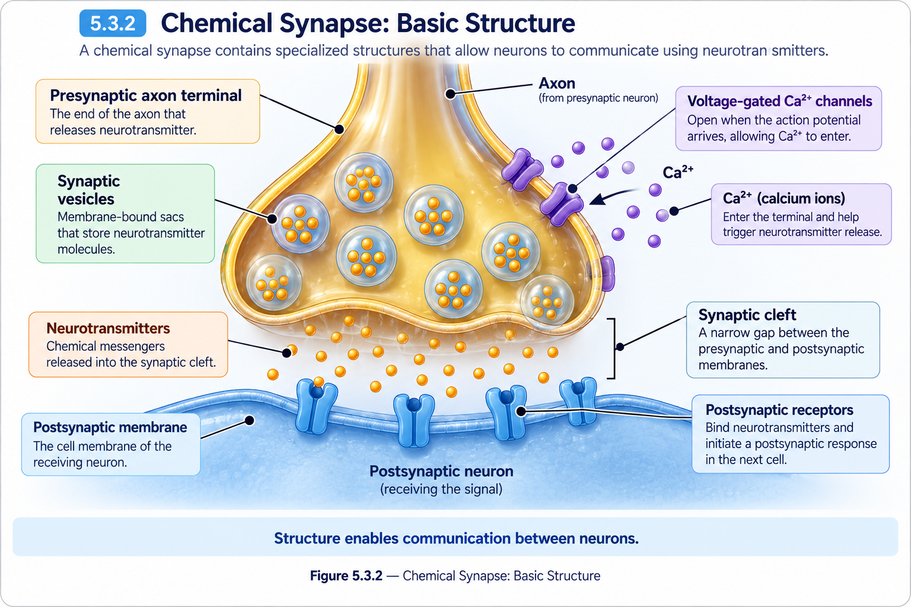
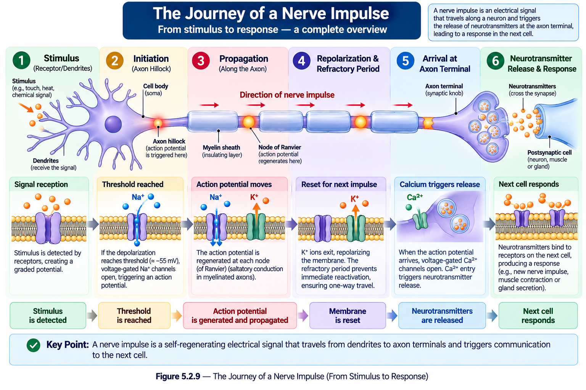
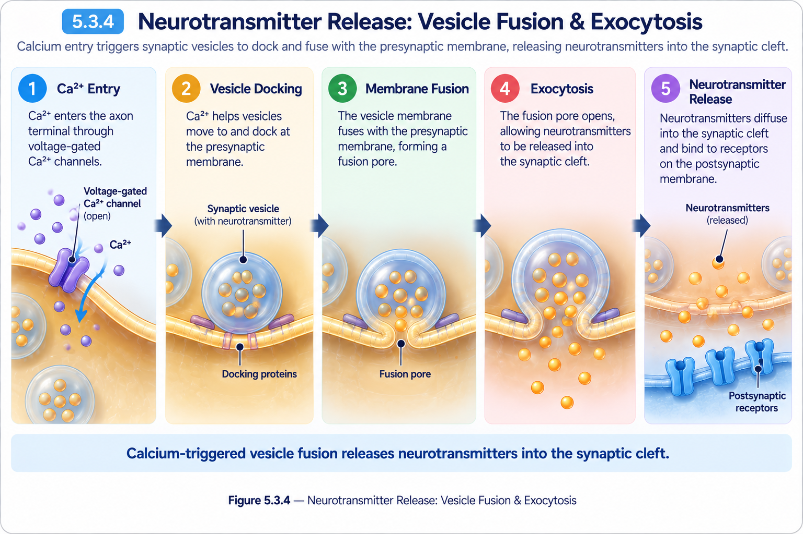
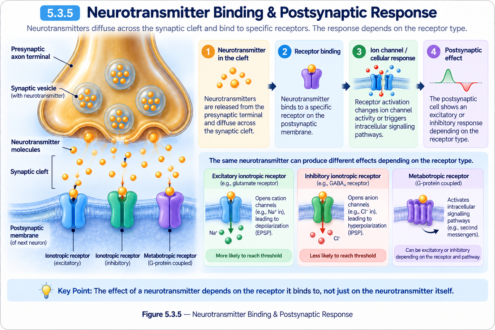
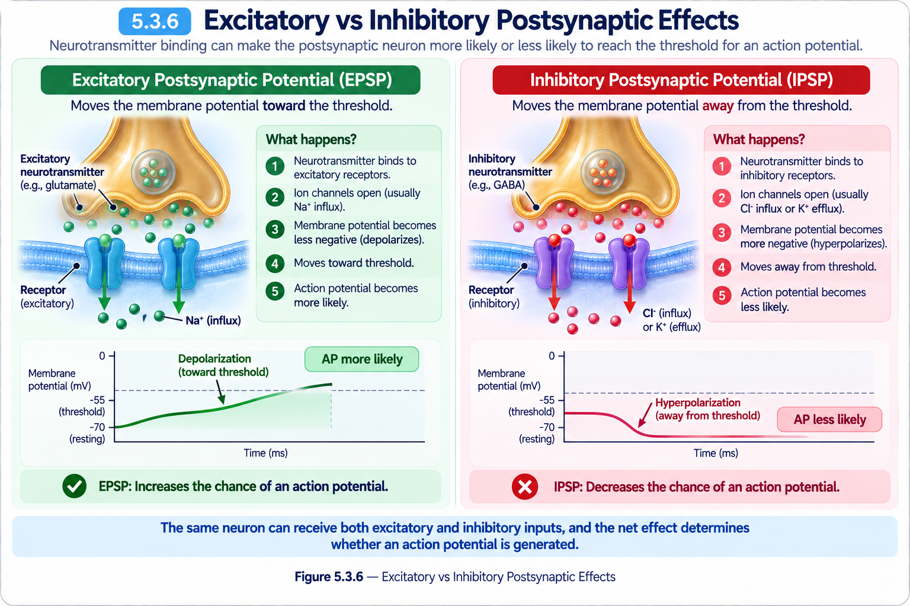
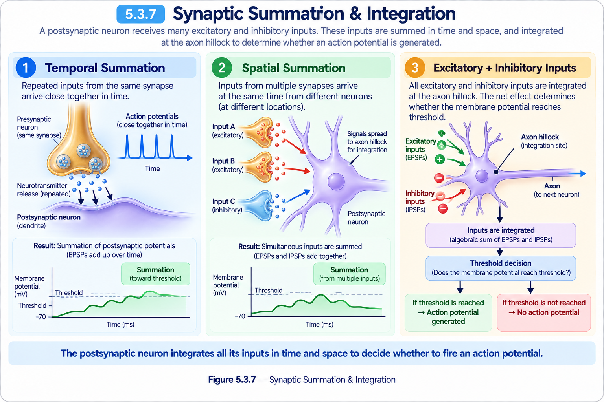
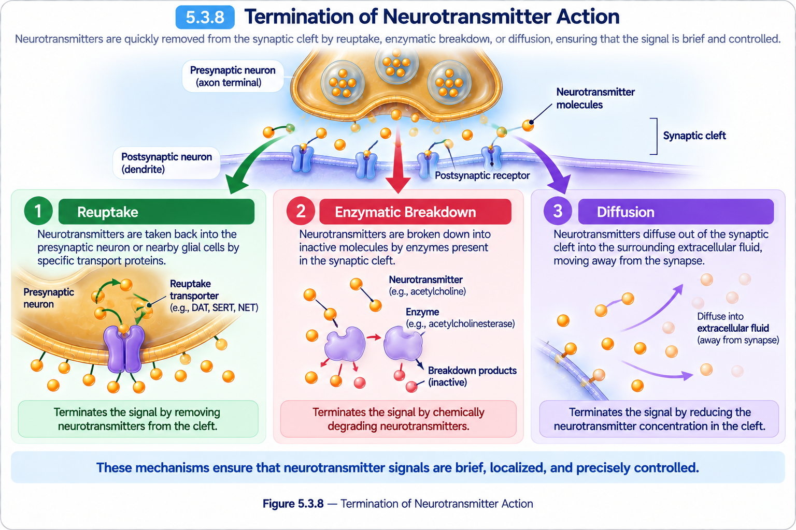
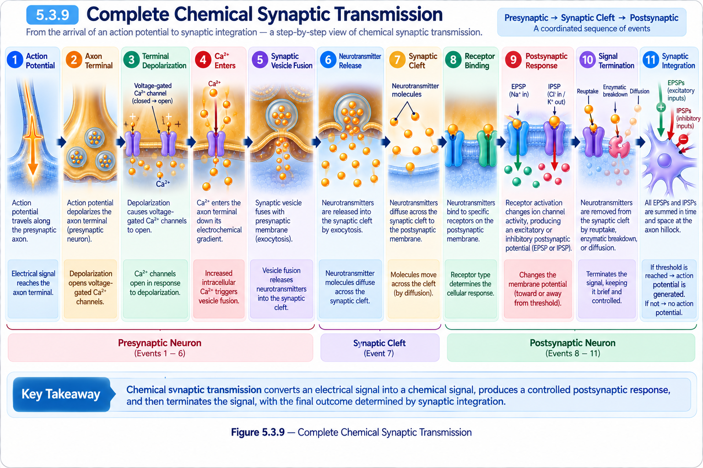

An action potential can travel along an axon, but communication with another cell requires the signal to cross a specialized junction called a synapse. At a chemical synapse, neurons communicate by releasing neurotransmitters that bind to receptors on the next cell.
📑 Table of Contents
- 🎯 Learning Objectives
- 📖 Introduction
- 🔗 What Is a Synapse?
- 🧩 Structure of a Chemical Synapse
- ⚡ Arrival of the Action Potential
- 🧪 Neurotransmitter Release
- 🎯 Receptor Binding & Postsynaptic Response
- ⚖️ Excitatory & Inhibitory Signals
- ➕ Synaptic Summation & Integration
- 🛑 Termination of Neurotransmitter Action
- ➡️ From One Neuron to the Next
- 🧠 Synaptic Plasticity
- 📋 Synapses at a Glance
- 📌 Quick Revision
- ❓ Practice Quiz
🎯 Learning Objectives
After completing this lesson, you should be able to:
- Define a synapse and synaptic transmission.
- Identify the major parts of a chemical synapse.
- Explain what happens when an action potential reaches the axon terminal.
- Explain the role of calcium ions in neurotransmitter release.
- Describe synaptic vesicle fusion and exocytosis.
- Explain how neurotransmitters bind to postsynaptic receptors.
- Distinguish between excitatory and inhibitory postsynaptic effects.
- Explain spatial and temporal summation.
- Describe the main mechanisms that terminate neurotransmitter action.
- Explain the basic idea of synaptic plasticity.
📖 Introduction
In the previous lesson, we followed an action potential as it propagated along the axon.
But the action potential does not simply continue directly into the next neuron. At the axon terminal, the electrical signal is converted into a form of chemical communication.
This communication takes place at a synapse.

An action potential reaches the axon terminal, triggers neurotransmitter release, and allows the next cell to respond.
🔗 What Is a Synapse?
A synapse is a specialized junction where one neuron communicates with another neuron or with another type of cell.
In a typical chemical synapse, the neuron sending the signal is called the presynaptic cell. The cell receiving the signal is called the postsynaptic cell.
The small space between the presynaptic and postsynaptic membranes is called the synaptic cleft.
Chemical Synapse
- Uses neurotransmitters.
- Signal crosses a synaptic cleft.
- Receptors detect the neurotransmitter.
Electrical Synapse
- Uses direct electrical communication between closely connected cells.
- Does not rely on neurotransmitter release across a typical synaptic cleft.
- Provides very rapid cell-to-cell communication.
📌 Remember
Presynaptic = sends the signal
Postsynaptic = receives the signal
🧩 Structure of a Chemical Synapse
A chemical synapse contains specialized structures that allow an electrical signal to trigger chemical communication with the next cell.
The presynaptic axon terminal contains synaptic vesicles filled with neurotransmitters. Voltage-gated calcium channels are present in the terminal membrane.
Across the synaptic cleft, the postsynaptic membrane contains receptors that detect the released neurotransmitter.

🔎 Main Structures
- Presynaptic axon terminal: releases neurotransmitter.
- Synaptic vesicles: store neurotransmitter.
- Voltage-gated Ca²⁺ channels: allow calcium entry when activated.
- Synaptic cleft: narrow space between the cells.
- Postsynaptic receptors: detect neurotransmitter.
⚡ Arrival of the Action Potential
The action potential travels along the axon and eventually reaches the presynaptic axon terminal.
Depolarization of the terminal membrane opens voltage-gated calcium channels. Calcium ions then move into the axon terminal.
The entry of Ca²⁺ is the key trigger that initiates neurotransmitter release.

Action potential arrives → terminal depolarizes → voltage-gated Ca²⁺ channels open → Ca²⁺ enters.
🧪 Neurotransmitter Release
Calcium entry into the presynaptic terminal triggers synaptic vesicles to move toward and interact with the presynaptic membrane.
A vesicle can fuse with the presynaptic membrane and release its neurotransmitter into the synaptic cleft. This process is called exocytosis.

🎯 Receptor Binding & Postsynaptic Response
After release, neurotransmitter molecules diffuse across the synaptic cleft and reach the postsynaptic membrane.
The neurotransmitter binds to specific receptors on the postsynaptic cell.
Receptor activation changes the activity of the postsynaptic cell. The exact effect depends on the receptor and the type of postsynaptic response it produces.

A neurotransmitter's effect depends on the receptor it activates. The same chemical messenger can therefore produce different effects in different receptor contexts.
⚖️ Excitatory & Inhibitory Signals
Postsynaptic signals can influence how likely the receiving neuron is to generate an action potential.
An excitatory postsynaptic potential (EPSP) generally moves the membrane potential toward the level required for an action potential.
An inhibitory postsynaptic potential (IPSP) generally moves the membrane potential away from that level or otherwise reduces the likelihood of an action potential.

EPSP
Makes the postsynaptic neuron more likely to reach threshold and generate an action potential.
IPSP
Makes the postsynaptic neuron less likely to reach threshold and generate an action potential.
➕ Synaptic Summation & Integration
A neuron may receive signals from many synapses at the same time. These signals can be combined, or summed, at the receiving neuron.
Temporal summation occurs when repeated signals from the same synapse arrive close together in time.
Spatial summation occurs when signals from different synapses influence the neuron at approximately the same time.
The postsynaptic neuron integrates excitatory and inhibitory inputs. The combined effect influences whether threshold is reached.

Temporal Summation
Repeated inputs arrive close together in time and their effects can add together.
Spatial Summation
Inputs from different synapses contribute to the combined postsynaptic effect.
🧠 Integration
Excitatory + inhibitory inputs → integration → threshold decision
🛑 Termination of Neurotransmitter Action
Neurotransmitter action must be limited in time so that synaptic communication does not continue indefinitely.
Neurotransmitters can be removed or inactivated through several mechanisms.

Reuptake
Neurotransmitter is transported back into the presynaptic neuron or nearby cells.
Enzymatic Breakdown
Enzymes chemically break down the neurotransmitter.
Diffusion
Neurotransmitter molecules move away from the synaptic cleft.
➡️ From One Neuron to the Next
Chemical synaptic transmission is a sequence of linked events. The action potential arriving at the axon terminal initiates a chain of events that ultimately changes the activity of the postsynaptic cell.
The complete sequence can be summarized as:

Electrical signaling along the axon is converted into chemical signaling at the synapse, then converted back into a postsynaptic electrical or cellular response.
🧠 Synaptic Plasticity
Synaptic connections are not completely fixed. Their strength and effectiveness can change in response to patterns of activity.
This ability of synapses to change is called synaptic plasticity.
Synaptic plasticity can involve changes in how effectively a presynaptic neuron releases neurotransmitter, how strongly the postsynaptic cell responds, or how synaptic connections are organized.
Synaptic Strengthening
Synaptic communication can become more effective following appropriate patterns of activity.
Synaptic Weakening
Synaptic communication can also become less effective under different patterns of activity.
🧠 Why It Matters
Synaptic plasticity is an important basis for changes in neural circuits associated with learning and memory.
📋 Synapses at a Glance
| Concept | Key Idea |
|---|---|
| Synapse | Specialized junction for cell-to-cell communication. |
| Presynaptic cell | Sends the synaptic signal. |
| Postsynaptic cell | Receives the synaptic signal. |
| Synaptic cleft | Narrow space between synaptic membranes. |
| Ca²⁺ | Entry into the presynaptic terminal triggers neurotransmitter release. |
| Neurotransmitter | Chemical messenger released by the presynaptic cell. |
| Receptor | Detects neurotransmitter and produces a postsynaptic response. |
| EPSP | Generally makes an action potential more likely. |
| IPSP | Generally makes an action potential less likely. |
| Summation | Combination of synaptic inputs. |
| Termination | Limits neurotransmitter action through mechanisms such as reuptake, breakdown, and diffusion. |
| Plasticity | Ability of synaptic strength or function to change. |
📌 Quick Revision
Synapse
Specialized junction for communication between cells.
AP Arrival
Action potential reaches the axon terminal.
Calcium Entry
Ca²⁺ enters and triggers neurotransmitter release.
Neurotransmitter
Released from synaptic vesicles into the cleft.
Receptor
Detects neurotransmitter on the postsynaptic cell.
EPSP / IPSP
Postsynaptic signals can increase or decrease the likelihood of reaching threshold.
Summation
Synaptic inputs are integrated by the neuron.
Termination
Neurotransmitter action is limited by removal or inactivation.
Plasticity
Synaptic strength and function can change.
🧠 Complete Recap
Action Potential → Axon Terminal → Ca²⁺ Entry → Vesicle Fusion → Neurotransmitter Release → Receptor Binding → Postsynaptic Response → Signal Termination
❓ Practice Quiz
Ready to test your understanding of synapses and neurotransmission?
Review synaptic structure, calcium entry, neurotransmitter release, receptor binding, EPSPs and IPSPs, summation, termination, and synaptic plasticity before taking the quiz.